This website presents current CO₂ emissions from the combustion of liquid and gaseous fuels within the energy sector. The calculations use monthly fuel combustion statistics and are aligned with the CO₂ emissions from fuel combustion published in Austria's National Inventory Document.
CO₂ emissions from three categories are presented: Natural Gas, Oil Products and International Aviation.
Emissions from natural gas are calculated from gas consumption data published by E-Control. The data is modified by subtracting gas used for non-energy purposes.
Emissions from oil products are calculated from monthly consumption data published by Eurostat. The fuel types gasoil and dieseloil, fuel oil, liquified petroleum gas (LPG), gasoline and kerosene are included. Note that most of the kerosene is used for international aviation. To include missing consumption activities in the raw data, constant monthly CO₂ emissions of 240 kilotonnes (kt) are added.
CO₂ emissions from international aviation are calculated as a share of 98.83% of kerosene consumption published in the Eurostat fuel consumption dataset. This is the average share of international aviation fuel use in the years 2022 to 2024.
The predictions do not cover all of Austria's greenhouse gas emissions. The share of emissions included in recent years can be seen in the figure on the right.
The selected CO₂ emissions from Oil and Gas in the energy sector covered more than 58% of total emissions in 2024.
A complete documentation of the methodology is available in the bachelor thesis of Elijah Stängl.
The code can be accessed here .
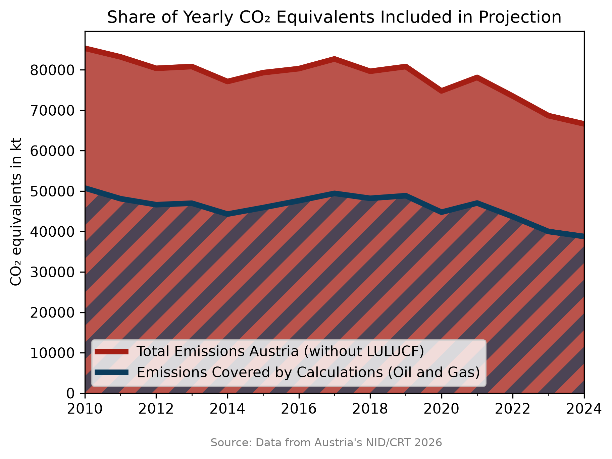
In the following figures, the monthly CO₂ emissions in the current year and the three previous years before are shown. The emissions are presented as monthly emissions on the left and as cumulative emissions on the right.
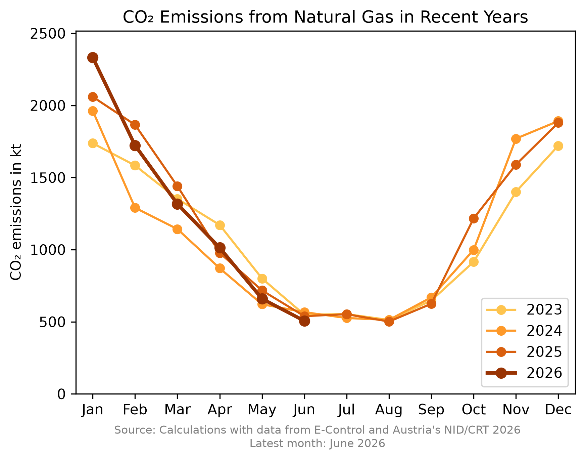
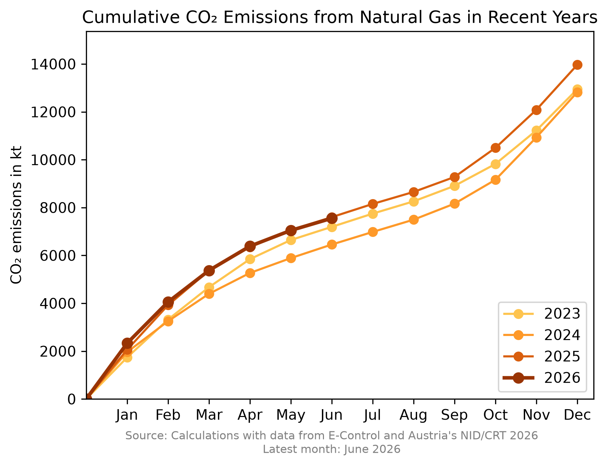
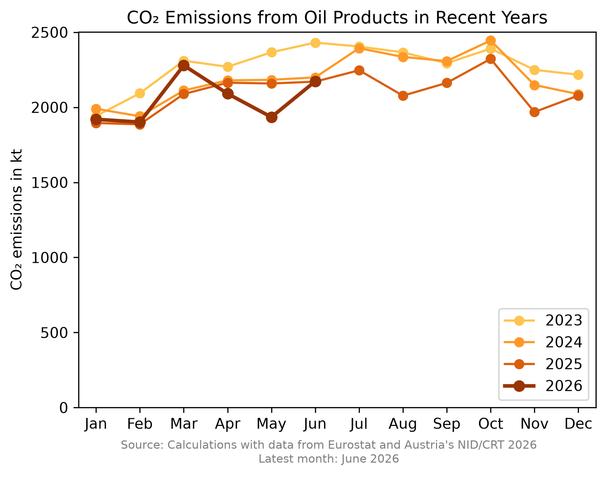
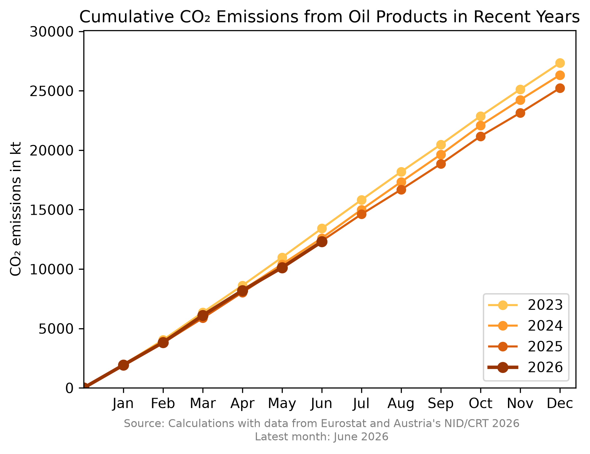
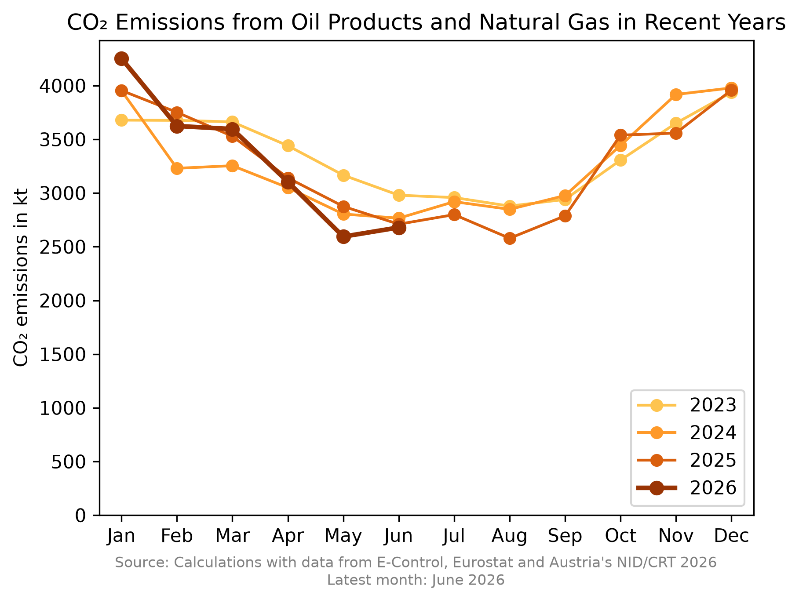
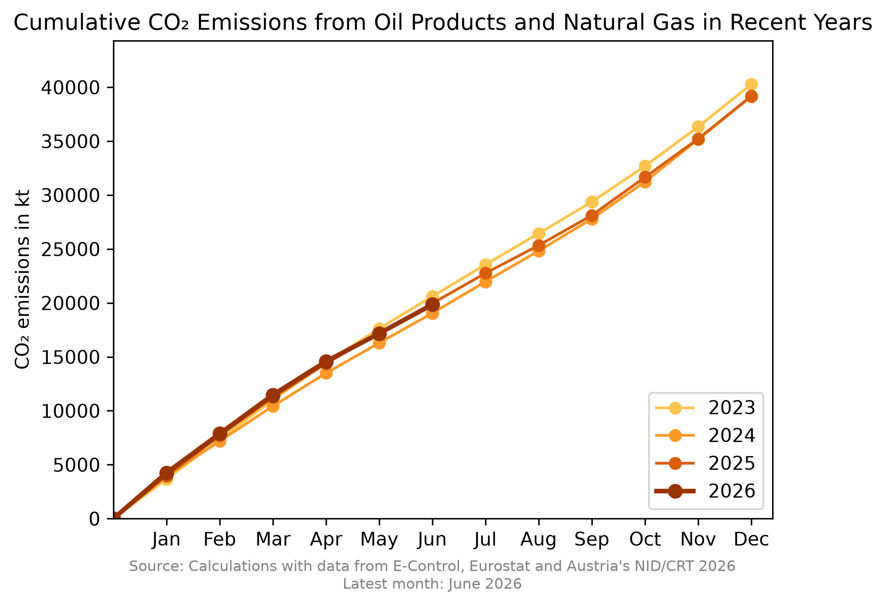
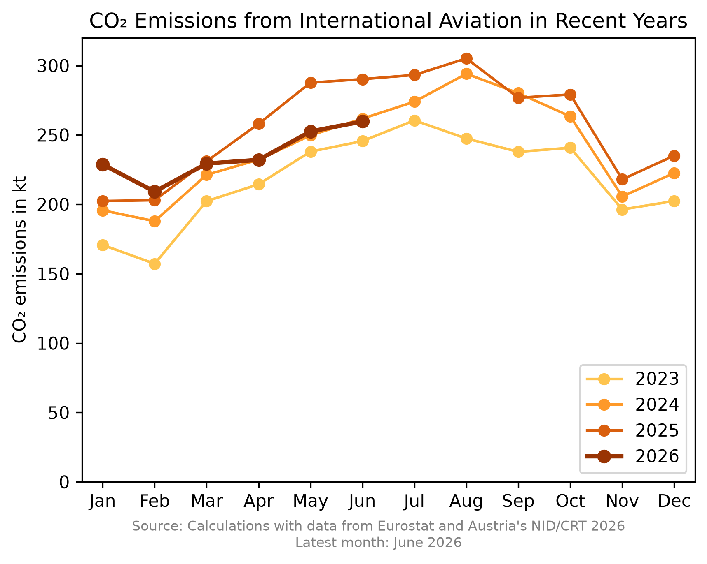
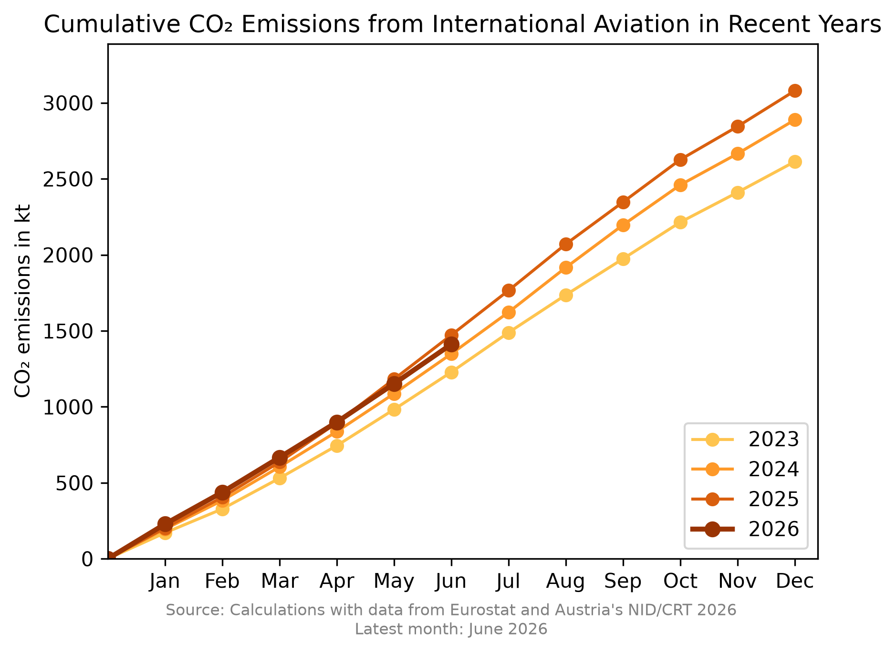
In the following figures, the long-term trends of the calculated CO₂ emissions are shown as monthly data points, and to better visualise trends, also shown as the average over the last 12 months. All months of the past 12 years are shown in the figures, implying that one line consists of 144 values.
The category Oil & Gas consists of the sum over all calculated CO₂ emissions from Oil Products and Natural Gas. Note that International Aviation is excluded, since it is normally not accounted in the emissions of a specific country.
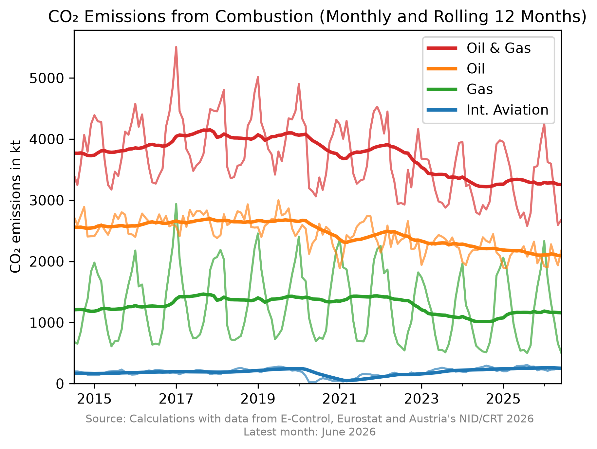
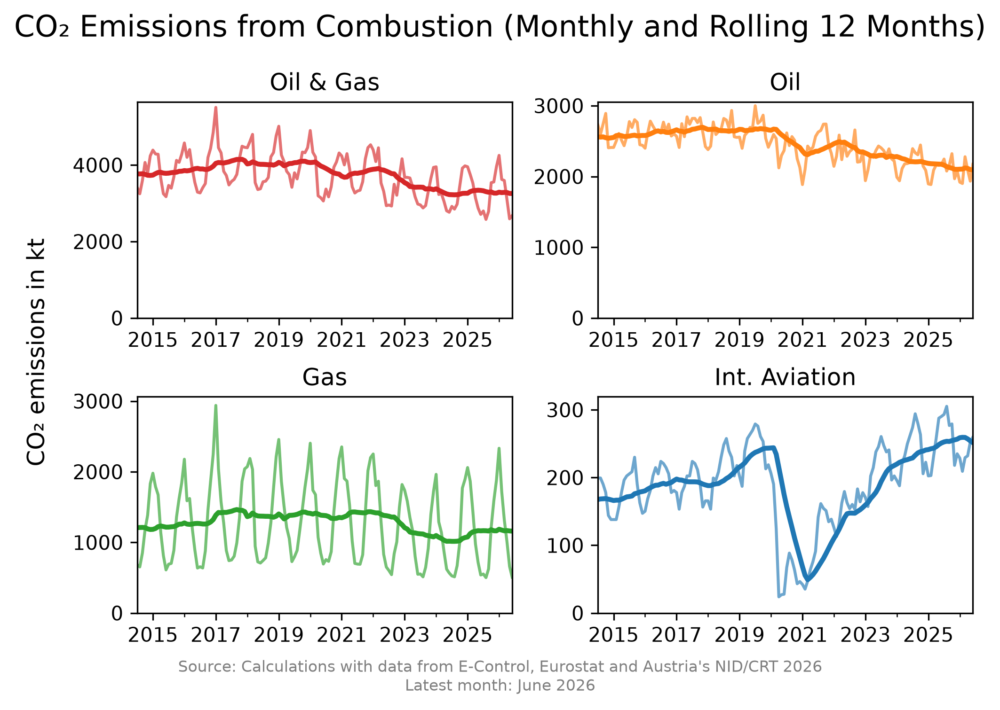
The category "Others" consists of the fuel types fuel oil, LPG and kerosene (domestic aviation).
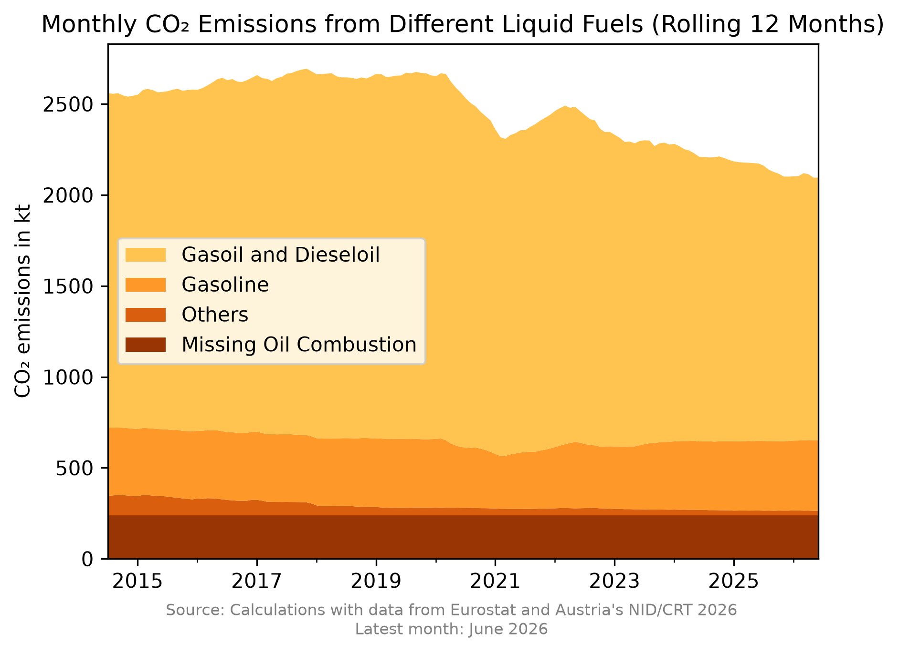
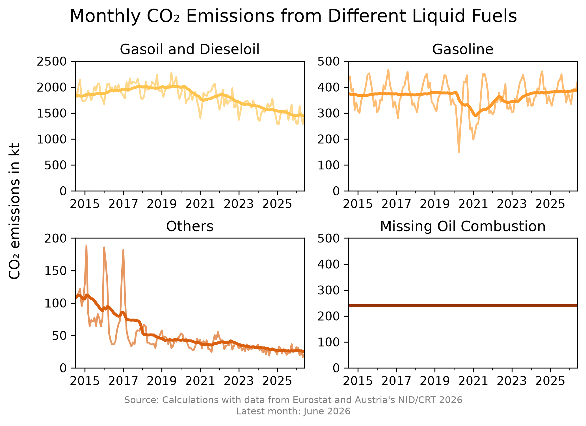